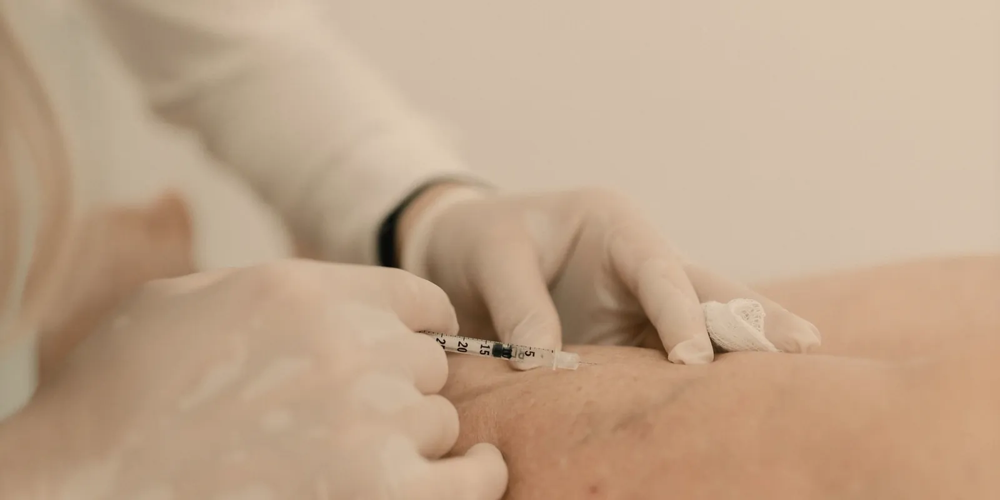

Exámenes para la circulación de las piernas: cuál pide el médico
Un eco doppler, un índice tobillo-brazo, un análisis de sangre: no es raro salir de la consulta con el nombre de un examen que no conocías. Aquí va, en orden, qué mide cada uno y cuál de ellos hacemos en Seravena.

¿Te dejaron una orden con dos o tres exámenes para la circulación de las piernas y no tienes claro para qué sirve cada uno? Es una duda común: no se trata de un solo estudio, y confundirlos hace que la cita de resultados se sienta más enredada de lo necesario. En Seravena, en Medellín, el que tenemos confirmado en el mismo consultorio de El Poblado es el eco doppler venoso; los demás que puede pedirte tu médico (doppler arterial, índice tobillo-brazo, análisis de sangre) se explican aquí en general, para que sepas qué mide cada uno antes de tu próxima cita.
Vamos uno por uno.
Exámenes para la circulación de las piernas: primero, las venas
Si el síntoma apunta a las venas: piernas pesadas, hinchadas, várices visibles o calambres que empeoran al final del día, el examen de referencia es el eco doppler venoso, que ya explicamos a fondo en ese artículo. Combina ecografía y doppler para ver, al mismo tiempo, la forma de la vena y cómo se mueve la sangre por dentro. Según MedlinePlus, la biblioteca de medicina de los Institutos Nacionales de Salud de EE. UU., este examen puede ayudar a diagnosticar coágulos, várices e insuficiencia venosa, y en las piernas también sirve para calcular el índice tobillo-brazo cuando hace falta revisar las arterias.
No usa radiación ni agujas, y no exige ayuno ni preparación especial.
El examen de las arterias: por qué en Medellín casi siempre se pide aparte
Si lo que preocupa son los pies fríos, un dolor al caminar que obliga a detenerse, o una piel pálida que no mejora con el clima, el médico suele apuntar hacia las arterias, no hacia las venas. Ya lo explicamos con más detalle en pies fríos y piernas pesadas: ¿circulación arterial o venosa?.
El examen de primera línea aquí es el índice tobillo-brazo (ITB). Según el Instituto Nacional del Corazón, los Pulmones y la Sangre de EE. UU. (NHLBI), es una prueba indolora: compara, con un manguito de presión y un dispositivo de ultrasonido, la presión arterial del tobillo contra la del brazo. Un resultado de 1,00 o más es normal; por debajo de 0,90 orienta a una enfermedad arterial periférica, y por debajo de 0,40 señala un compromiso más serio.
Aquí va la parte honesta: en Seravena no hacemos el índice tobillo-brazo en el consultorio. Si tu médico lo considera necesario, te remite a un laboratorio vascular o a un servicio de imágenes diagnósticas; lo que sí tenemos confirmado en El Poblado es el eco doppler venoso.
¿Y un examen de sangre sirve para la circulación?
Solo en un caso puntual. Cuando se sospecha un coágulo (trombosis venosa profunda), el dímero D, un análisis de sangre, ayuda a descartarlo cuando el resultado sale negativo, según los Centros para el Control de Enfermedades de EE. UU. (CDC). Un resultado positivo, en cambio, no confirma nada por sí solo: hay que seguir con el eco doppler venoso, que para esta condición sigue siendo, en palabras del mismo CDC, la prueba de imagen estándar.
Otros análisis generales, como glucosa o colesterol, importan para vigilar factores de riesgo, pero no diagnostican un problema circulatorio por sí mismos.
¿Cómo decide tu médico cuál pedirte?
Casi siempre, por el síntoma que cuentas en consulta, no por una lista fija de exámenes. Si hay pesadez, hinchazón o várices, el primer paso suele ser el eco doppler venoso. Si hay pies fríos o dolor al caminar, entra el índice tobillo-brazo. Y si la hinchazón apareció de un día para otro en una sola pierna, con dolor, se evalúa la posibilidad de un coágulo con eco doppler y, a veces, con dímero D.
En Seravena preferimos empezar siempre por el eco doppler venoso cuando el síntoma apunta a las venas: es el examen que tenemos confirmado en el mismo consultorio y el que responde a la gran mayoría de las consultas por piernas pesadas o várices que recibimos en Colombia.
Si quieres ver el proceso completo, desde que llegas a la cita hasta que sales con un plan, puedes revisar cómo se diagnostica un problema venoso.
Ningún examen por sí solo reemplaza la consulta: el valor real está en que el médico junte lo que cuentas, lo que encuentra al revisarte y el resultado del examen correcto.
Antes de tu próxima cita, una acción simple ayuda más que memorizar nombres de exámenes: anota qué síntoma tienes (pesadez, hinchazón, pies fríos o dolor al caminar) y desde cuándo lo notas. Esa nota le dice a tu médico, mejor que cualquier examen, por dónde empezar.
Preguntas frecuentes
¿Qué examen piden para revisar la circulación de las piernas?
Depende del síntoma: si lo que preocupa son las venas (pesadez, hinchazón, várices o un dolor sordo que empeora al final del día), el examen de referencia es el eco doppler venoso. Si lo que preocupa son las arterias (dolor al caminar que mejora al parar, o pies fríos y pálidos), el médico suele pedir primero el índice tobillo-brazo.
¿El índice tobillo-brazo duele?
No. Es una prueba indolora: el profesional usa un manguito de presión, como el de un examen de presión arterial normal, junto con un dispositivo de ultrasonido, y compara la presión en el tobillo con la del brazo. Un resultado de 1,00 o más se considera normal; por debajo de 0,90 orienta a un problema en las arterias de la pierna.
¿Un examen de sangre sirve para revisar la circulación?
Solo en un caso puntual: cuando se sospecha un coágulo (trombosis venosa), el dímero D es un análisis de sangre que ayuda a descartarlo si el resultado sale negativo. Para confirmar un coágulo, o para revisar várices e insuficiencia venosa, el examen de sangre no basta: se necesita el eco doppler venoso. Otros análisis generales, como glucosa o colesterol, sirven para vigilar factores de riesgo, no para diagnosticar un problema circulatorio.
¿Dónde se hace el eco doppler venoso en Medellín?
En Seravena se hace en el mismo consultorio de El Poblado, sin necesidad de remisión de la EPS: es una valoración particular y muchas veces se realiza el mismo día de la cita. Los demás exámenes, como el índice tobillo-brazo o los análisis de sangre, se piden a un laboratorio o a un servicio de imágenes diagnósticas aparte.
Fuentes
- Ecografía dúplex. MedlinePlus, Biblioteca Nacional de Medicina de EE. UU. (NIH), 2026.
- Arteriopatía periférica: Diagnóstico. Instituto Nacional del Corazón, los Pulmones y la Sangre (NHLBI, NIH), 2022.
- Pruebas y diagnóstico del tromboembolismo venoso. Centros para el Control y la Prevención de Enfermedades (CDC), 2024.